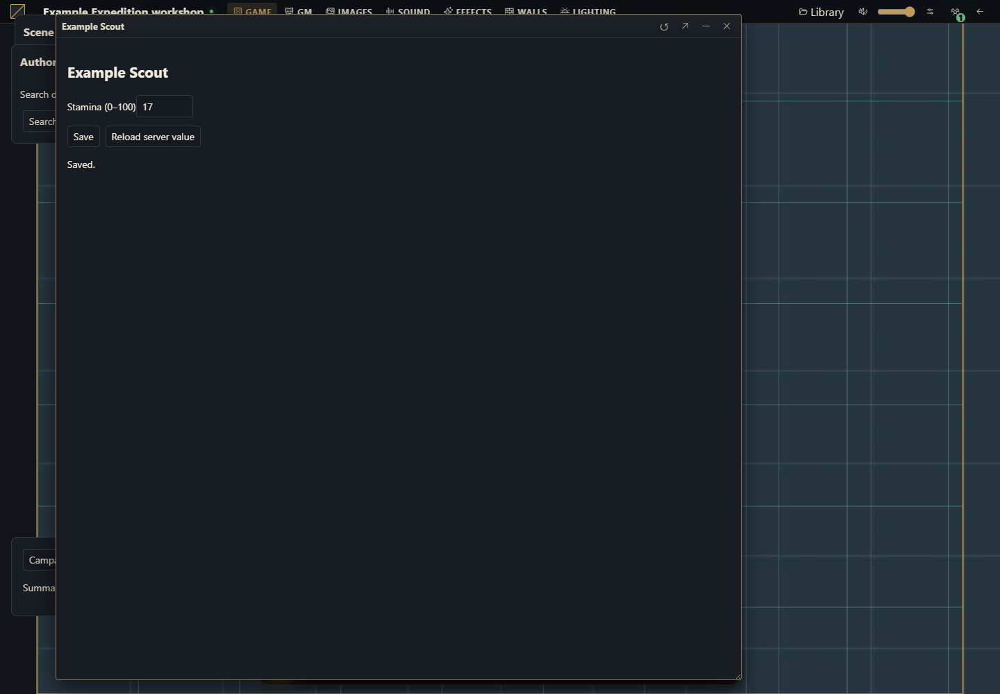

System package: an editable character sheet
A single original system package with actor types, a complete minimal sheet and revision-aware saving.


Goal and prerequisites
Create a campaign using Example Expedition. The package declares character and npc actors, an empty gear item type, and replaces the actor sheet with an editable stamina field. It provides no published game rules or catalogs.
Target host: 0.3.0, SDK 1.0.0. Sample interface strings are English. Preserve the requested version when adapting.
Complete files
These are complete unsigned sources. After reviewing the code, test with Install from ZIP on a disposable host. Marketplace publication uses the signature/catalog described in signing and activation. No private signing key is included.
Complete manifest
{
"id": "example.expedition",
"name": "Example Expedition",
"version": "1.0.0",
"sdk": {
"requires": ">=1.0.0 <2.0.0",
"tested": "1.0.0"
},
"description": "Original character/NPC sheets with a saved stamina field and an empty gear type.",
"author": "Gravewright documentation examples",
"license": "GPL-3.0-only",
"entry": "main.mjs",
"system": {
"actorTypes": [
{
"id": "character",
"label": "Character"
},
{
"id": "npc",
"label": "NPC"
}
],
"itemTypes": [
{
"id": "gear",
"label": "Gear"
}
]
}
}Example code
main.mjs
export default {
start({styles}) { styles.use('styles.css'); },
register({register}) {
const sheet={
mode:'replace',types:['character','npc'],
async mount({root,context,api,signal,onDispose}) {
const doc=root.ownerDocument;
const form=doc.createElement('form');form.className='example-panel';
form.setAttribute('aria-label','Example Expedition sheet');
const title=doc.createElement('h2');
const label=doc.createElement('label');label.textContent='Stamina (0–100)';
const input=doc.createElement('input');input.type='number';input.min='0';input.max='100';
label.append(input);
const saveButton=doc.createElement('button');saveButton.type='submit';saveButton.textContent='Save';
const reloadButton=doc.createElement('button');reloadButton.type='button';reloadButton.textContent='Reload server value';
input.disabled=true;saveButton.disabled=true;reloadButton.disabled=true;
const status=doc.createElement('p');status.setAttribute('role','status');
form.append(title,label,saveButton,reloadButton,status);root.append(form);
let current,dirty=false,pending;
const token=context.tokenId ? {tokenId:context.tokenId} : {};
async function load() {
input.disabled=true;saveButton.disabled=true;reloadButton.disabled=true;
try {
const sheet=await api.actors.sheet(context.actorId,token,{signal});
if(signal.aborted) return;
current=sheet;title.textContent=sheet.name;
input.value=String(sheet.data.stamina ?? 10);
input.disabled=!sheet.canEdit;saveButton.disabled=!sheet.canEdit;
dirty=false;
} finally { if(!signal.aborted) reloadButton.disabled=false; }
}
function save() {
if(pending) return pending;
if(!dirty || !current?.canEdit) return Promise.resolve();
const stamina=Number(input.value);
if(input.value.trim()==='' || !Number.isInteger(stamina) || stamina<0 || stamina>100) {
status.textContent='Enter an integer from 0 to 100.';
return Promise.reject(new Error('Invalid stamina'));
}
const payload={actorId:context.actorId,name:current.name,version:current.version,
sheetVersion:current.sheetVersion,data:{...current.data,stamina},
...(current.tokenId ? {tokenId:current.tokenId} : {})};
const requestId=crypto.randomUUID();
input.disabled=true;saveButton.disabled=true;reloadButton.disabled=true;
pending=(async()=>{
try {
await api.actors.saveSheet(payload,{requestId,signal});
if(signal.aborted) return;
await load();status.textContent='Saved.';
} catch(error) {
if(!signal.aborted) {
if(error.code==='conflict') {
await load();
status.textContent='Conflict: server value loaded. Review it before editing again.';
} else status.textContent=error.code || 'Save failed. Reload before retrying.';
}
throw error;
} finally {
pending=undefined;
if(!signal.aborted){input.disabled=!current?.canEdit;saveButton.disabled=!current?.canEdit;reloadButton.disabled=false;}
}
})();
return pending;
}
input.addEventListener('input',()=>{dirty=true;},{signal});
form.addEventListener('submit',event=>{event.preventDefault();void save().catch(()=>{});},{signal});
reloadButton.addEventListener('click',()=>{
void load().then(()=>{if(!signal.aborted)status.textContent='Server value loaded.';})
.catch(error=>{if(!signal.aborted)status.textContent=error.code||'unavailable';});
},{signal});
root.closest('.gw-window')?.addEventListener('gravewright:sheet-flush',event=>{
if(pending || dirty) event.detail.waitUntil(save());
},{signal});
onDispose(()=>form.remove());
await load();
}
};
register('actor.sheet',sheet);
register('token.sheet',sheet);
},
stop() {}
};styles.css
.gw-module-root .example-panel { padding: var(--space-4, 16px); font-size: 14px; }
.gw-module-root .example-panel label { display: block; margin-bottom: var(--space-3, 12px); }
.gw-module-root .example-panel button { margin-right: var(--space-2, 8px); }
.gw-module-root[data-module-id="example.campaign-summary"] .example-panel { position: fixed; left: 16px; bottom: 112px; z-index: 20; max-width: min(360px, calc(100vw - 32px)); border: 1px solid var(--border); border-radius: var(--radius-md); background: var(--surface); color: var(--text); pointer-events: auto; }How to run
Review and install the source ZIP through Systems → Install from ZIP on a disposable host; select Example Expedition for a new campaign.
Create a Character or NPC, open its sheet, change Stamina and press Save. Close and reopen the window.
Assign a player read access and then edit access to the actor. Compare disabled/enabled controls and the server response.
Open the same actor in two sessions. Save one, then save the stale one. Review the refreshed server value before editing again.
Expected result and lifecycle
The saved value survives reopening. The payload keeps version and sheetVersion from the same read. Linked tokens use the actor; independent tokens use the returned tokenId snapshot. Pending saves participate in gravewright:sheet-flush.
Errors and limits
A conflict reloads the authoritative sheet and asks the user to review it. Validation rejects blank/noninteger/out-of-range stamina in the sample UI; external system JSON remains subject to host JSON limits and permissions. Add authoritative rule validation only through contracts actually supported by the target host.
How to validate
Create/edit/save/reopen both actor types.
Verify read-only access cannot write, including a direct attempted call.
Test linked and independent tokens separately.
Close during a slow save and during an invalid edit; failed flush must keep the window open.
How to use AI with this example
Extend Example Expedition with [original fields]. Keep one installable system package, the declared actor/item types and sheet-flush/version behavior. Preserve unrelated data fields. Do not add a Server Rules companion or require a newer host. State unsupported backend requirements explicitly.